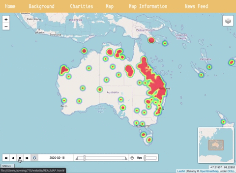
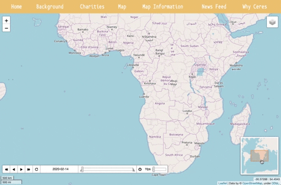

How Does the Map Work?
The map page shows the relevant areas for the Australian Wildfires.The Red areas are where the fires are most extreme.
The Green areas are where the fires are dangerous, but not as extreme as red areas.
The Blue areas are where the fires are least dangerous and extreme, but can still be dangerous.
On the top left corner of the map, there are zoom buttons, the + being the zoom-in button, and the - being the zoom-out button. These buttons are optional, as the user can also use the scroll wheel to manage these functionalities. Scroll back to zoom-in and scroll forward to zoom-out. The user can also use the trackpad, swiping into zoom-in and swiping out to zoom-out.

On the top left corner of the map, there are zoom buttons, the + being the zoom-in button, and the - being the zoom-out button. These buttons are optional, as the user can also use the scroll wheel to manage these functionalities. Scroll back to zoom-in and scroll forward to zoom-out. The user can also use the trackpad, swiping into zoom-in and swiping out to zoom-out.

On the bottom left of the map, there’s a time slider to view the weekly progression of the wildfire spread. The time slider has buttons to go back and forward one frame and multiple frames. There is an option to loop over and a slider to increase or decrease the time of looping through the frames. The timer slider also shows the date of the fires by year, month, date.
Below the time slider shows the scale of the map and changes when the map is zoomed in or out. The bottom right shows a mini-map, so it’ll be easier to navigate through the world. Just click and drag! Below that shows the coordinate of your cursor on the map.
